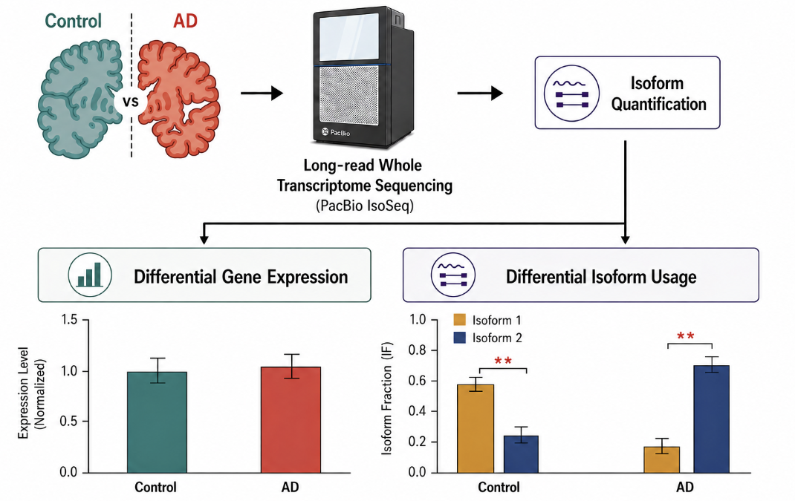
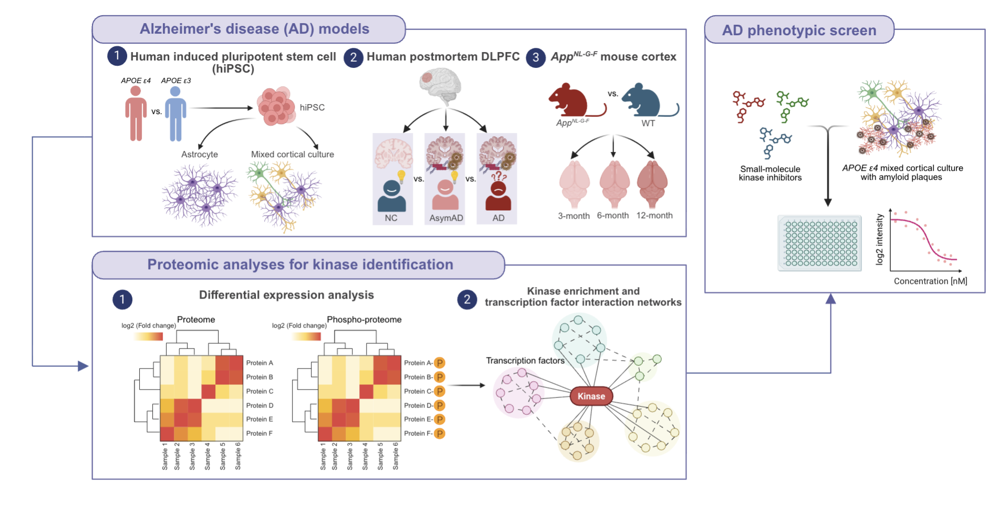

Computational AD Genomics
Using a computational approach, we are working to better characterize the effects of genetics on Alzheimer's disease molecular phenotypes. As part of a multi-lab collaboration through the Functional Genomics Consortium and xQTL studies in the Alzheimer's Disease Sequencing Project, we integrate large-scale genetic, epigenetic, transcriptomic, proteomic, and metabolomic datasets to identify molecular pathways associated with AD risk.
These analyses help prioritize mechanisms for follow-up in iPSC-derived CNS cell models and support therapeutic discovery, including collaborations focused on drug screening.

Cholesterol and matrisome pathways dysregulated in astrocytes and microglia
The impact of Apolipoprotein E epsilon 4 (APOE4), the strongest genetic risk factor for Alzheimer's disease (AD), on human brain cellular function remains unclear. Here we investigated the effects of APOE4 on brain cell types derived from population and isogenic human induced pluripotent stem cells (hiPSCs), post-mortem brain and APOE targeted replacement (APOE-TR) mice.
Population and isogenic models demonstrate that APOE4 local haplotype rather than a single risk allele contributes to risk. Global transcriptomic analyses reveal human-specific, APOE4-driven lipid metabolic dysregulation in astrocytes and microglia. These glia-specific cell and non-cell autonomous changes may contribute to increased AD risk.

Human iPSC-based modeling of central nervous system disorders for drug discovery
The emergence of induced pluripotent stem cell (iPSC) technology has changed the paradigm of drug discovery. iPSC-based three-dimensional tissue engineering provides more sophisticated tissue architectures and micro-environmental cues than traditional two-dimensional culture.
The lab uses iPSC-derived CNS cell models, organoids, spheroids, and multi-disciplinary omics approaches to uncover disease pathogenesis, guide therapeutic strategies, and support personalized precision medicine.

Large-scale human brain genomics to understand Alzheimer's disease risk
The lab has a computational biology branch that characterizes the effects of genetic and epigenetic factors on Alzheimer's disease molecular phenotypes. Through multi-lab collaborations, we collect large-scale human brain multi-omics data and perform integrative genomics analyses using computational and machine-learning tools.
We focus on genetic and epigenetic interactions in human AD brain using whole-genome sequencing and DNA methylation data, linking brain-region-specific methylation changes to AD risk and therapeutic targets for follow-up using iPSC-based models.

Population-wide cell-based multi-omics analysis of molecular drivers
Wet and dry lab members work together to leverage brain organoids and single-cell multi-omics analysis to characterize cell-specific regulatory programs associated with AD phenotype risk.
From iPSCs derived from donors with diverse genetic backgrounds and differentiated into AD-relevant brain organoid models, we analyze transcriptome and chromatin accessibility across single cells. Integrating single-cell multi-omics data with genetic background helps identify cell-specific molecular pathways that drive risk of neurological disorders.

Isoform-level transcriptomic remodeling in Alzheimer's disease revealed by long-read RNA sequencing
Alternative splicing affects over 95% of human genes and is especially prominent in the brain, where it is essential for transcriptomic and proteomic diversity underlying neuronal function. Although dysregulated RNA processing has been increasingly implicated in neurodegenerative diseases, its specific contribution to AD pathogenesis remains poorly understood, in part because conventional short-read sequencing cannot reliably resolve full-length transcript isoforms in complex brain tissue.
We are applying whole-transcriptome long-read RNA sequencing to postmortem human hippocampal tissue to characterize isoform-level remodeling in AD at full-length resolution, connecting transcript architecture changes to predicted functional consequences at the protein level. This work aims to reveal a layer of molecular dysregulation in AD that is invisible to gene-level analyses and to identify isoform-switching events as potential therapeutic targets.

Multi-proteomic modeling reveals convergent kinase dysregulation in Alzheimer's disease
Altered kinase metabolism is a distinct proteopathic signature in postmortem AD brains that correlates with cognitive declines and presages disease development. Neuro-oncogenic kinase inhibitors have been actively explored as an alternative to immunotherapies that cause increased pharmacogenomic risks in carriers of the apolipoprotein E epsilon 4 allele (APOE4), the strongest risk factor for AD.
We apply multi-omics and protein network-based analyses, integrating proteomes and phosphoproteomes from APOE4 human induced pluripotent stem cell models, human AD postmortem dorsolateral prefrontal cortex, and AppNL-G-F mice cortex to identify convergent kinase targets that govern core AD pathologies. This work aims to identify promising kinase targets and new therapeutic opportunities for AD.
Machine learning-based AD patient genetics risk stratification and cognitive resilience
We developed a machine learning-based polygenic scoring framework that links Alzheimer's disease risk variants to cell-type-specific molecular pathways using single-nucleus transcriptomics. This approach identifies genetically defined AD subtypes, predicts disease-related molecular changes and clinical outcomes, and reveals protective mechanisms associated with resilience and delayed disease progression.
APOE4-driven molecular vulnerabilities in human neurons and astrocytes
Apolipoprotein E4 (APOE4) is the leading genetic risk factor for AD. Using patient-derived and isogenic iPSC-derived cortical cultures, multi-omics profiling, and postmortem brain validation, we identify APOE4-associated splicing and protein machinery defects that drive selective neuronal vulnerability in Alzheimer's disease.
This work uncovers therapeutic targets capable of rescuing pathogenic molecular changes associated with APOE4-driven neuronal and astrocyte vulnerability.
Research Images
Representative research images provided by Dr. TCW for the independent lab website.